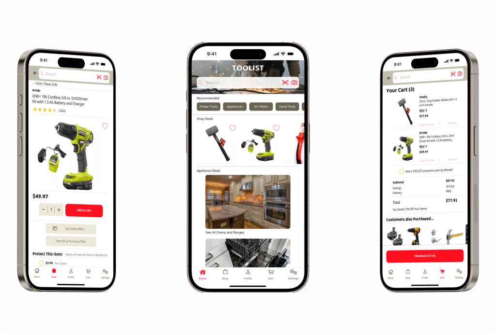

Toolist
Toolist is an online tool, appliance, and housewares store designed for people who want a simplified shopping experience, and may not be as comfortable with technology as the average person.
My Process
Research
For the research portion I focused on the e-commerce apps of the four most popular housewares retailers in my area. Several common patterns were found and utilized in this project. Most notably the top and bottom navigation bars between all four apps were esentially slight variations of one another.
Ideation
For this project I focused on the checkout feature. Users would be given the ability to add multiple items to their cart, and complete the checkout process, including payment and shipping information.
Wireframes
The paper wireframes were then made greyscale using Figma. Horizontal and vertical scrolling sections were applied where needed, and iOS components were included where needed.
Design
From the greyscale wireframes, color and typography were applied. A simple palette of red, yellow, and grey was chosen in order to reduce visual noise and help keep things simple. A page showing similar items that confirms the item being added to the cart, as well as a couple more screens aiding checkout confirmation were all added.
Prototype Feedback
As with everything else I've done, the prototype feedback was invaluable to the final design. Among other things, the biggest improvements were made in the realm of color choice, and placement of UI elements. Usage of margins was pointed out particularly by one of my testers, and that awareness greatly helped this project.
Conclusion
Challenges
The overall challenge with this project was having a large amount of potential functionalities on each screen, as opposed to spreading those individual functionalities to their own screens as I’ve done more in the past. Having an idea of where I wanted elements was no guarantee that it would work out that well once I actually started making digital wireframes, so there was a lot of back and forth between my reference material and the project.
I found utilizing the color palette to be fairly difficult as well. The colors I felt all worked well together in example images, yet for the purpose of an e-commerce app things didn’t fall into place the way I’d have preferred. My secondary color was difficult to work with and the alternate secondary color I don’t believe ended up being used effectively anywhere in the final design.
Takeaways
As with every project I’ve worked on so far, I’ve found that the user testing did the most in terms of altering the design for the better.
I have also learned that I should probably start trusting myself when I feel something looks “off” about the design, even if I’ve rationalized the decision to myself in some way. For this project an example of that would be the light-yellow used in the header in my initial high-fidelity prototype. I felt it didn’t work well, but was determined to utilize the secondary color in the design. This basically resulted in my accepting of something that aesthetically wasn’t as optimal because I “wanted” to make sure all of my palette was utilized.
Another concept the user testing had me thinking about more than I had been was the usage of margins, and how those margins can be used to convey a hierarchy of information.
I think at first these changes may appear smaller, but to the overall effect of the product the have a large impact. I think the skills I’ve developed up to this point have allowed for these considerations to be made, and I will definitely be remembering what I’ve learned with this project going forward.